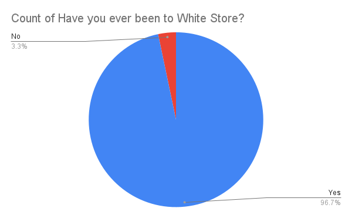
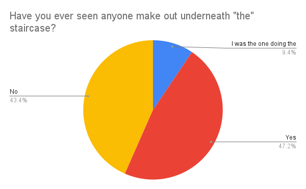
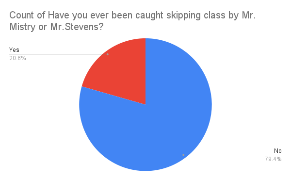
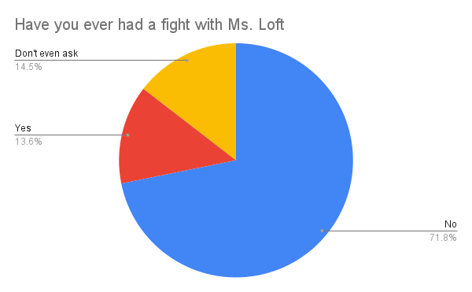
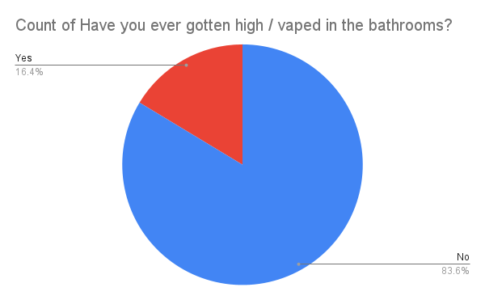
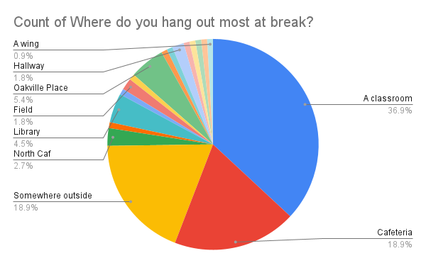

| Graduating Class of 2022 | - Class Profile
White Oaks Secondary School
What Makes WOSS Unique?
From the lead filled water fountains to famous astronaut Chris Hadfield graduating from our school, White Oaks has a lot of originality to offer,
much of it thanks to the students present. Seeing debaters on team Canada and students that crush national math competitions in the hallways is not a rare sight.
From our stellar band to the fact that we rank 21 out of 749 Ontario High Schools, it is obvious that White Oaks is special. In order to capture this amazing
group of people, we devised a survey to get to know more about this years graduates. We hope you enjoy!
The White (Oaks) Store
The most iconic convenience store near WOSS - lovingly named White Store - is a popular destination for students of all grades. The name originates from the
fact that ... the store is white (lol). From the 3 student limit inside, to the trampoline in the backyardThe real question is, who hasn't
been there over the past 4 years?
Apparently, 3.3% of respondents (approximately X students) have not been to White Store even once, which is incredibly odd since every student hears about it
from the upper years. It is literally right behind the South Campus and accessible by a paved pathway through school grounds. To these students, I ask: Why?

Oakville Place
Oakville Place is by far the most popular mall for WOSS students to visit. Is it because the food is great? No, not really. Are the stores fun and interesting?
Also no. However, just like White Store, it's a must go place. Students often make the walk through the fields and elementary schools, take the local transportation,
or even drive if they are able to. With so many ways of going, who wouldn't want to vist?
According to our survey, 19.8% of respondents (approximately X students) have never been to Oakville Place, which is a much more significant portion of the population
than previously expected. Some factors that may explain this are that it is a 20 minute walk, so students do not have much time to spend there. Local transportation
also does not arrive on time usually, so students may have decided against it.

The Staircase
The staircases at WOSS are wonderfully multi-functional. You can go up them, and you can go down them. However, some students decide to get "creative" with
its use. Unfortunately, the underside of the staircase is still accessible to the poor other students who have the misfortune of coming across such ... passion.
According to our survey, over 47% of respondents (approximately X students) have seen such a display unfold, which is nearly half the graduating class! Luckily,
on the other side, almost an equal number of respondents have not seen it either, which makes me happy for their untainted view of the staircase. Unexpectedly, 9.4%
(approximately X students) of respondents were the ones commiting such acts. I just hope it was worth it for all of you.

Mister Mistry's Victims
With our senior year being a time of newfound freedom (called skipping class), many students opted to sign themselves out or just straight up skip classes when
they felt like it. Whether it was to burn time or work on things for another class, a popular destination during these "spares" was North Caf. However, Mr.Mistry and
Mr.Stevens knew this, and would kick you out if they found out. RIP to the fallen students.
According to our survey, over 20.6% of respondents (approximately X students) have been found out, which is surprisingly less than what we expected. However, with further
analysis, it is obvious that factors such as having spares, tendency of skipping class and the certain period that people skip does reduce the amount of people affected. To
Y students that were not caught, congratulations! You avoided being bored, alone or getting kicked off school property all together!

Ms.Loft's Foes
Stories of Ms.Loft's rules and difficult policies have definitely made it around campus. Whether it be about prom table seating or student council elections,
Ms.Loft seems to make things tricky. Whether there is any truth to the rumours is anecdotal, but it's still interesting to see just what portion of WOSS's
graduating class fought these battles nonetheless.
According to our survey, only 13.6% of respondents (approximately X students) actually fought with Ms.Loft. Whether this is an abnormally large or small portion of
the population depends on your opinion of Ms.Loft, but seeing as more than X students in one single grade have had problems with one teacher is ... slightly telling.
If we assume that the respondents that chose "Don't even ask" also had problems with Ms.Loft, the number more than doubles, which is much more significant. Godspeed
soldiers.

Bathroom Troublemakers
Every student knows that the bathrooms at WOSS aren't exactly used as bathrooms most of the time. From people just hanging out, vape parties and even fights,
the bathrooms are for all things unholy. Heck, the boys main bathroom door had to be taken off due to the amount of vapers.
According to our survey, 16.4% of respondents (approximately X students) have vaped or gotten high in the bathroom, which actually not as many as expected
how promiment they are. To these X students however, y'all are menaces. Please stop scaring the freshmen (and us too).

Bathroom Troublemakers
During our grade 9 and early 10th year, South Cafeteria used to be the main place for hanging out at break. However, due to the pandemic and lack of manpower, WOSS closed South caf for all periods
other than lunch. Even during break, you aren't lucky enough to snag a table right away, you're usually out of luck. As such, us graduates have had to be creative with our hangout spots!
According to our survey, the majority of graduates (X students) find a random classroom to hangout in, which doubles the next most popular spots, the cafeteria and outside. Other than that, the
interesting piece of data is that Y students regularly hang out at Oakville place, which is a solid distance away. Driving there repeatedly with todays gas prices??? Mad lads.

Worst Experiences!
To fill in later
Academic questions
This section includes more serious questions regarding the academics of WOSS's graduates. Although WOSS is known to be filled with super geniuses, we wanted to see
where we fall on this ladder of academic achievement. Enjoy, and be sure not to take these too seriously. You have already graduated!!!
Bathroom Troublemakers
During our grade 9 and early 10th year, South Cafeteria used to be the main place for hanging out at break. However, due to the pandemic and lack of manpower, WOSS closed South caf for all periods
other than lunch. Even during break, you aren't lucky enough to snag a table right away, you're usually out of luck. As such, us graduates have had to be creative with our hangout spots!
According to our survey, the majority of graduates (X students) find a random classroom to hangout in, which doubles the next most popular spots, the cafeteria and outside. Other than that, the
interesting piece of data is that Y students regularly hang out at Oakville place, which is a solid distance away. Driving there repeatedly with todays gas prices??? Mad lads.